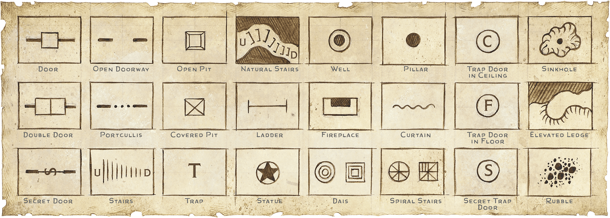

Chapter 4: Creating Adventures#
Whether you're creating your own adventures or using published ones, this chapter helps you create fun and memorable experiences for your players.
Creating an adventure involves blending scenes of exploration, social interaction, and combat into a unified whole that meets the needs of your players and your campaign. The basic elements of good storytelling should guide you throughout this process, joining the encounters into a coherent story.
Step-by-Step Adventures#
Follow these steps to create an adventure:
Step 1: Lay Out the Premise. Determine the situation or conflict that underscores the adventure. Also think about the adventure's setting and what is unique and fun about it.
Step 2: Draw In the Players. Think about how the characters will get drawn into the situation you've established. Consider how the adventure might tie in with the characters' goals.
Step 3: Plan Encounters. Determine the encounters or events that take the characters from the beginning of the adventure to the end.
Step 4: Bring It to an End. How do you expect the adventure will end? Think about possible endings as well as rewards for the characters.
The rest of this chapter offers inspiration and advice for each of these four steps.
Using Published Adventures
A published adventure includes a pregenerated scenario with the maps, NPCs, monsters, and treasures you need to run it. This allows you to focus your preparation time on plot developments that arise from the characters' actions.
You can adjust a published adventure so it better suits your campaign and appeals to your players. For example, you can replace the villain of an adventure with one the players have already encountered in your campaign, or add details from your campaign setting so the adventure involves your players' characters in ways that the adventure's designer never could have imagined.
Published adventures also provide inspiration for your own adventures. You can even take a part of an adventure and incorporate it into a different one. For example, you might use a map of a temple but repopulate it with monsters of your choice, or you might use a chase sequence as a model for a pursuit scene in your campaign.
Lay Out the Premise#
An adventure shares many of the features of a novel, a movie, an issue of a comic, or an episode of a TV show. Comic series and serialized TV dramas are particularly good comparisons because of the way individual adventures are limited in scope but blend together (to some degree) to create a larger narrative. If an adventure is a single episode or season of a series, a campaign is the series as a whole.
But while it's worthwhile to compare an adventure to these other forms of storytelling, remember that an adventure isn't a complete story until you play it. Your players are coauthors of the story with you, and the events of the story shouldn't be predetermined; the actions of the players' characters have to matter. For example, if a major villain shows up before the end of the adventure, the adventure should allow for the possibility that the heroes defeat that villain. Otherwise, players can feel as if they've been railroaded—set onto a course that has only one destination or outcome, no matter how hard they try to change it.
You might find it helpful to think about an adventure not as a narrative that arcs from beginning to end with little chance for deviation, but more in terms of situations that you are presenting to the characters. The adventure unfolds organically from the players' responses to the situations you present.
Guide Rails and Railroads
Players need to feel like they're in control of their characters, the choices they make matter, and what they do has some effect on the outcome of the adventure and on the game world. Keep that in mind as you're planning adventures. If your adventure relies on certain events, plan for multiple ways they might come about, or be prepared for clever players to prevent those events from happening as you expect. Otherwise, your players might end up feeling railroaded.
On the flip side, players sometimes willfully disregard the adventure hooks you put in front of them and go entirely off the rails. See "Respect for the DM" in chapter 1 and "Draw In the Players" later in this chapter for advice about dealing with this situation.
One way to give players impactful choices is to keep multiple adventure possibilities available to them at the same time. If the characters have two or three things they can investigate or pursue, they have a meaningful choice. And if whatever threads they don't investigate turn into bigger problems, you've clearly demonstrated that their decisions matter.
Adventure Premise#
One way to start brainstorming an adventure is to imagine a situation that might pique the characters' interest. For some D&D players, a rumor of a dungeon filled with treasure is enough of a premise to launch an adventure. A brewing war between two small nations, the death of a leader and the accession of a new one, a migration of dangerous monsters, the appearance of a comet, and the opening of a portal to another plane of existence are other situations that could lead to adventure.
A simple premise might also boil down to "a magic item that the characters want is hidden away in a dungeon." Browsing the magic items in chapter 7 can inspire you to create a simple adventure seed.
Adventure Conflict#
A premise can be a good starting point, but before you can turn it into an adventure, it needs a conflict worthy of the heroes' attention. The conflict might be driven by a single villain or monster, a villain with lackeys, an assortment of monsters, or an evil organization. But it need not involve the forces of evil; it could be a rivalry or disagreement between two families, organizations, or nations; a looming natural (or magical) disaster; or even conflict within the adventuring party about how to pursue the characters' goals.
Given a premise of a dungeon filled with treasure, what conflict awaits the characters when they enter the dungeon? That might be as simple as "hostile monsters want to eat the characters" or "two rival factions of monsters inhabit the dungeon." It might also involve a rival or a villain hoping to plunder the dungeon first, a rumbling volcano threatening to erupt and bury the dungeon, or two rival families claiming ownership of the treasure left behind in the dungeon by their ancestors.
If you're stuck, browse through the Monster Manual until you find a monster that inspires you.
Adventure Situations by Level#
Use the tables in this section to inspire adventure ideas for characters of different levels, with the range of possible levels grouped into four tiers. You can roll on the tables and see if the result sparks your imagination or read the entries on the tables until you find something that grabs you.
Levels 1–4: Local Heroes#
The fate of a village might depend on the abilities of fledgling adventurers. These characters navigate dangerous terrain and explore haunted crypts, where they might fight ferocious wolves, giant spiders, evil cultists, flesh-eating ghouls, and ruthless brigands.
Levels 1–4 Adventure Situations#
| 1d20 | Situation |
|---|---|
| 1 | A dragon wyrmling has gathered a band of kobolds to help it amass a hoard. |
| 2 | Wererats living in a city's sewers plot to take control of the governing council. |
| 3 | Bandit activity signals efforts to revive an evil cult long ago driven from the region. |
| 4 | A pack of gnolls is rampaging dangerously close to local farmlands. |
| 5 | A rivalry between two merchant families escalates from mischief to mayhem. |
| 6 | A new sinkhole has revealed a long-buried dungeon thought to hold treasure. |
| 7 | Miners discovered an underground ruin and were captured by monsters living there. |
| 8 | An innocent person is being framed for the crimes of a shape-shifting monster. |
| 9 | Ghouls are venturing out of the catacombs at night. |
| 10 | A notorious criminal hides from the law in an old ruin or abandoned mine. |
| 11 | A contagion in a forest is causing spiders to grow massive and become aggressive. |
| 12 | To take revenge against a village for an imagined slight, a necromancer has been animating the corpses in the village cemetery. |
| 13 | An evil cult is spreading in a village. Those who oppose the cult are marked for sacrifice. |
| 14 | An abandoned house on the edge of town is haunted by Undead because of a cursed item in the house. |
| 15 | Creatures from the Feywild enter the world and cause mischief and misfortune among villagers and their livestock. |
| 16 | A hag's curse is making animals unusually aggressive. |
| 17 | Bullies have appointed themselves the village militia and are extorting money and food from villagers. |
| 18 | After a local fisher pulls a grotesque statue from the sea, aquatic monsters start attacking the waterfront at night. |
| 19 | The ruins on the hill near the village lie under a curse, so people don't go there—except a scholar who wants to study the ruins. |
| 20 | A new captain has taken charge of a band of pirates or bandits and started raiding more frequently. |
Levels 5–10: Heroes of the Realm#
At this tier, characters undertake adventures that might determine the fate of a region. These adventurers venture into fearsome wilds and ancient ruins, where they confront giants, hydras, golems, devils, demons, and mind flayers. They might also face a young dragon that has just established a lair.
Levels 5–10 Adventure Situations#
| 1d20 | Situation |
|---|---|
| 1 | A group of cultists has summoned a demon to wreak havoc in the city. |
| 2 | A rebel lures monsters to the cause with the promise of looting the king's treasury. |
| 3 | An evil Artifact has transformed a forest into a dismal swamp full of horrific monsters. |
| 4 | An Aberration living in the Underdark sends minions to capture people from the surface to turn those people into new minions. |
| 5 | A monster (perhaps a devil, slaad, or hag) is impersonating a prominent noble to throw the realm into civil war. |
| 6 | A master thief plans to steal royal regalia. |
| 7 | A golem intended to serve as a protector has gone berserk and captured its creator. |
| 8 | A conspiracy of spies, assassins, and necromancers schemes to overthrow a ruler. |
| 9 | After establishing a lair, a young dragon is trying to earn the fear and respect of other creatures living nearby. |
| 10 | The approach of a lone giant alarms the people of a town, but the giant is simply looking for a place to live in peace. |
| 11 | An enormous monster on display in a menagerie breaks free and goes on a rampage. |
| 12 | A coven of hags steals cherished memories from travelers. |
| 13 | A villain seeks powerful magic in an ancient ruin, hoping to use it to conquer the region. |
| 14 | A scheming aristocrat hosts a masquerade ball, which many guests see as an opportunity to advance their own agendas. At least one shape-shifting monster also attends. |
| 15 | A ship carrying a valuable treasure or an evil Artifact sinks in a storm or monster attack. |
| 16 | A natural disaster was actually caused by magic gone awry or a cult's villainous plans. |
| 17 | A secretive cult uses spies to heighten tensions between two rival nations, hoping to provoke a war that will weaken both. |
| 18 | Rebels or forces of an enemy nation have kidnapped an important noble. |
| 19 | The descendants of a displaced people want to reclaim their ancestral city, which is now inhabited by monsters. |
| 20 | A renowned group of adventurers never returned from an expedition to a famous ruin. |
Levels 11–16: Masters of the Realm#
The fate of a nation or even the world depends on the characters at this tier. These adventurers explore uncharted regions and delve into forgotten dungeons, where the characters confront terrible schemers of the Lower Planes, cunning rakshasas and beholders, and hungry purple worms. They might encounter and even defeat a powerful adult dragon. At this tier, they broker peace between nations or lead them into war, and their formidable reputations attract the attention of powerful foes.
Levels 11–16 Adventure Situations#
| 1d12 | Situation |
|---|---|
| 1 | A portal to the Abyss opens in a cursed location and spews demons into the world. |
| 2 | A band of hunting giants has driven its prey—enormous beasts—into pastureland. |
| 3 | An adult dragon's lair is transforming an expanse into an environment inhospitable to the other creatures living there. |
| 4 | A long-lost journal describes an incredible journey to a hidden subterranean realm full of magical wonders. |
| 5 | Cultists hope to persuade a dragon to undergo the rite that will transform it into a dracolich. |
| 6 | The ruler of the realm is sending an emissary to a hostile neighbor to negotiate a truce, and the emissary needs protection. |
| 7 | A castle or city has been drawn into another plane of existence. |
| 8 | A storm tears across the land, with a mysterious flying citadel in the eye of the storm. |
| 9 | Two parts of a magic item are in the hands of bitter enemies; the third piece is lost. |
| 10 | Evil cultists gather from around the world to summon a monstrous god or alien entity. |
| 11 | A tyrannical ruler outlaws the use of magic without official sanction. A secret society of spellcasters seeks to oust the tyrant. |
| 12 | During a drought, low water levels in a lake reveal previously unknown ancient ruins that contain a powerful evil. |
Levels 17–20: Masters of the World#
At this tier, adventures have far-reaching consequences, possibly determining the fate of millions on the Material Plane and even places beyond. Characters traverse otherworldly realms and explore demiplanes and other extraplanar locales, where they fight terrible balor demons, titans, archdevils, liches, ancient dragons, and even manifestations of the gods.
Levels 17–20 Adventure Situations#
| 1d10 | Situation |
|---|---|
| 1 | An ancient dragon is scheming to destroy a god and take the god's place in the pantheon. The dragon's minions are searching for Artifacts that can summon and weaken this god. |
| 2 | A band of giants drove away a metallic dragon and took over the dragon's lair, and the dragon wants to reclaim the lair. |
| 3 | An ancient hero returns from the dead to prepare the world for the return of an equally ancient monster. |
| 4 | An ancient Artifact has the power to defeat or imprison a rampaging titan. |
| 5 | A god of agriculture is angry, causing rivers to dry up and crops to wither. |
| 6 | An Artifact belonging to a god falls into mortal hands. |
| 7 | A titan imprisoned in the Underdark begins to break free, causing terrible earthquakes that are only a hint of the destruction that the titan will cause if it is released. |
| 8 | A lich tries to exterminate any spellcasters that approach the lich's level of power. |
| 9 | A holy temple was built around a portal leading to one of the Lower Planes to prevent any evil from passing through in either direction. Now the temple has come under siege from both directions. |
| 10 | Five ancient metallic dragons lair in the Pillars of Creation. If all these dragons are killed, the world will collapse into chaos. One has just been slain. |
Adventure Setting#
Many D&D adventures revolve dungeons—interior spaces such as great halls and tombs, subterranean monster lairs, mazes riddled with traps, natural caverns extending for miles beneath the surface, and ruined castles. The "Dungeons" section in chapter 3 can help you craft a dungeon environment for an adventure.
Of course, not every adventure takes place in a dungeon. A wilderness trek across the desert or a harrowing journey into the jungle can be an exciting adventure in its own right. Outdoors, dragons wheel across the sky in search of prey, fierce warriors pour forth from grim fortresses to wage war against their neighbors, ogres and trolls plunder farmsteads for food, and monstrous spiders drop from web-shrouded trees.
Adventures can also take place in cities, towns, and villages, which are often no less dangerous than dungeons or the wilds. The "Settlements" section in chapter 3 can help you create a settlement where an adventure can take place.
Writing for Yourself
When you're preparing an adventure to run for your friends, you don't need to write hundreds of pages describing each location in exhaustive detail. You can run a game with no more written notes than you'll find in one of the short adventures at the end of this chapter.
Adventure Maps#
An adventure location almost always benefits from a map, and the more thoughtfully constructed the map is, the more fun players are likely to have as their characters explore the location.
Maps and Adventure Structure. An adventure map can take many forms—from a detailed dungeon map that shows the dimensions and contents of every room to a rough outline of how one encounter might lead to another, depending on the route the characters choose. Whatever form your map takes, it functions as a flowchart since each decision point (a branch in a corridor, a room with multiple exits) leads to new decision points. If the characters leave a room by the north door, you check your map and determine it leads them into the great hall, lined with pillars, where the fire giant king holds court. If they leave by the secret door to the southeast, you check the map and follow the secret tunnel as it winds to the hidden vaults below the great hall.
Sample Maps. Appendix B contains maps you can use for your adventures or as inspiration for your own maps. You can also modify those maps to fit the details of the location you have in mind.
Map Inspiration. The internet is a great place to find adventure maps that have been made available, as well as real-world building floor plans and city maps and other images that can inspire your mapmaking.
Bringing a Location to Life#
An inhabited adventure location has its own ecosystem. The creatures that live there need to eat, drink, breathe, and sleep. Predators need prey, and intelligent creatures search for lairs offering the best combination of air, food, water, and security. Keep these factors in mind when designing an adventure location. If the site has an internal logic, adventurers can use their understanding of that logic to make informed decisions.
For example, characters who find a pool of fresh water in a dungeon might infer that many of the creatures inhabiting the dungeon come to that spot to drink. The adventurers might set an ambush at the pool. Likewise, closed or locked doors can restrict the movement of some creatures. A dungeon infested with carrion crawlers or stirges would need open passages so that these creatures can move about to find food.

Common Map Symbols
Adventure Inhabitants#
The monsters in any adventure location are more than a collection of random creatures that happen to live near one another. Fungi, natural animals, scavengers, and predators can coexist in a complex ecology, alongside sapient creatures who share living space through some combination of negotiation and domination.
Each creature's entry in the Monster Manual indicates the terrain types where that creature is most often found, and that book also includes tables listing the creatures commonly found within each type of terrain. Using that information, you can decide which creatures inhabit an adventure location within a particular environment. You can choose a range of creatures, from common vermin to sapient inhabitants and terrifying predators, and decide how they live together.
Factions. Particularly in larger areas, groups of creatures might compete for resources. When these groups consist of sapient creatures, opportunities abound for the adventurers who enter those areas. Characters might ally with one group or play groups against each other to reduce the threat of the more powerful monsters. For example, in a dungeon inhabited by mind flayers and the grimlocks they rule, the adventurers might try to incite the grimlocks to revolt against the mind flayers.
Bring the NPC leaders of groups to life as described in the "Nonplayer Characters" section in chapter 3, fleshing out their personalities and goals. Then use those elements to decide how those leaders respond to adventurers.
Draw In the Players#
If an adventure situation directly affects the characters or the people and places they care about, that is often enough motivation for the characters to get involved. (However, see "Respect for the Players" in chapter 1 for advice about harming the people and places characters love.)
If the adventure situation doesn't have an obvious impact on the characters or the people or things they care about, you can use other techniques to draw in the players. These are best tailored to the motivations of your players and their characters. For example, some adventuring groups are noble heroes who respond without hesitation to the pleas of innocent villagers crying for help; other groups are hardened mercenaries who respond only to offers of payment. Some groups are devoted to gods, rulers, or other patrons who might send them on quests, either directly or through intermediaries.
Subvert Clichés
As you populate your world with interesting supporting characters, consider the following:
Avoiding Stereotypes. Show how multiple people from the same culture are different. Don't use a real-world accent in a disparaging way.
Beautiful Diversity. Feature members of different genders, ethnicities, and sexualities, as well as people with varied beliefs, capabilities, roles, professions, interests, and outlooks.
Fresh Spin. Whenever possible, put a fresh spin on a familiar trope. The mysterious figure who presents adventurers with a quest on behalf of the king might be the king in disguise. The wizard in the tower might be a projected illusion created by a band of thieves to guard their loot.
Relatability. Treat NPCs as real people with real motivations. Put yourself in their shoes. What would you do?
Adventure Patrons#
Many adventures begin with a patron asking the characters to undertake a quest or mission, offering a reward in exchange for this service.
Take the time to flesh out an NPC who serves as a patron. Once in a while, it can be interesting for the characters' patron to betray them. Pulling that trick more than once in a campaign, though, is likely to make the players unwilling to trust any future patrons and possibly suspicious about any adventure hooks you put in front of them.
The Patron Hooks table offers some suggestions for ways a patron can lead characters to an adventure situation. The "Campaign Start" section in chapter 5 offers some more suggestions for patrons.
Patron Hooks#
| 1d6 | Hook |
|---|---|
| 1 | A town crier announces that someone is hoping to hire adventurers. |
| 2 | Someone the characters want to impress or need a favor from asks them to deal with the adventure situation. |
| 3 | When the characters arrive in a new city, they find a job board where someone has posted in search of adventurers. |
| 4 | A wealthy patron who is aware of the adventurers' accomplishments writes to them, offering to pay them for their talents. |
| 5 | A citizen in need, who has learned of the adventurers' accomplishments and kindness, travels miles to find them and implore them for help. |
| 6 | The adventurers are arrested (on valid or invented charges) and offered a chance to escape punishment by completing a quest. |
Supernatural Hooks#
Celestial omens, vivid dreams, or other magical phenomena can point characters to the adventure situation and suggest a course of action. The Supernatural Hooks table offers some suggestions.
Supernatural Hooks#
| 1d6 | Hook |
|---|---|
| 1 | The characters all have a vivid dream that foreshadows elements of the adventure. |
| 2 | While preparing spells, one character receives a quest from a god or patron. |
| 3 | A fortune teller's reading for one of the characters points to a quest and offers hints about challenges that lie ahead. |
| 4 | Flames, clouds, smoke, or huge flocks of birds take distinct shapes that portend the adventure situation. |
| 5 | Animals or animated objects speak clearly to direct the adventurers toward the situation. |
| 6 | Someone who died returns as a ghost and haunts the characters. The ghost prompts the characters to investigate the cause of the ghost's death and put it to rest. |
Happenstance Hooks#
Sometimes, characters just happen on an adventure through sheer coincidence—or at least what appears to be coincidence (which might actually involve divine or other supernatural intervention). The Happenstance Hooks table provides some ideas.
Happenstance Hooks#
| 1d6 | Hook |
|---|---|
| 1 | The characters find a letter describing the adventure situation. |
| 2 | The characters are on an unrelated quest, such as searching for a particular magic item, that leads them into the adventure situation. |
| 3 | The adventure situation disrupts a festival or ceremony that the characters are attending. |
| 4 | A magical mishap places the characters in the adventure situation. |
| 5 | While traveling in a caravan or aboard a ship, the characters befriend an NPC who has news about the adventure situation. |
| 6 | The characters are attacked after being mistaken for another group of adventurers. They learn about the adventure situation from a clue left behind by their attackers. |
Plan Encounters#
Encounters are the individual scenes in the larger story of your adventure. Reduced to fundamentals, an encounter is an objective with an obstacle. It accomplishes one or more of the following:
- Moving characters closer to achieving a goal
- Frustrating the characters' progress toward a goal
- Revealing new information
Character Objectives#
The following objectives can be foundations for encounters. Although these objectives focus on a single encounter during an adventure, using the same objective in multiple encounters allows you to combine these encounters into a larger obstacle or problem the adventurers must overcome.
Make Peace#
The characters must convince two opposing groups (or their leaders) to end the conflict that embroils them. As a complication, the characters might have enemies on one or both of the opposing sides, or some other group or individual might be instigating the conflict to further its own ends. An encounter aimed at making peace might involve only social interaction, perhaps with the threat of combat if negotiations go poorly. It could also begin as a combat encounter, with the characters trying to stop the fighting and get the parties talking to each other.
Protect an NPC or Object#
The characters must act as bodyguards or protect some object in their custody. As a complication, an NPC under the party's protection might be cursed, panicked, unable to fight, or apt to risk the lives of the adventurers through dubious decisions. The object the adventurers have sworn to protect might be sentient, cursed, or difficult to transport. Such an encounter might be a combat encounter or an exploration encounter, with either Hostile monsters or a dangerous environment threatening the NPC or object the characters are trying to protect. If the characters are protecting an NPC, this objective can add an element of social interaction to a combat or exploration encounter.
Retrieve an Object#
The adventurers must gain possession of a specific object in the area of the encounter, often with a time limit. This might be a combat encounter, with monsters protecting the object, or an exploration encounter, with traps or hazards preventing access to the object. As a complication, enemies might desire the object as much as the adventurers do, adding a combat element to an exploration encounter or complicating a combat.
Run a Gauntlet#
The adventurers must pass through a dangerous area. As with retrieving an object, reaching the exit is a higher priority than killing opponents in the area. A time limit adds a complication, as does a decision point that might lead characters astray. This might be an exploration encounter, with traps and hazards as complications, or a combat encounter against Hostile monsters.
Sneak In#
The adventurers need to move through the encounter area without their enemies noticing. This is typically an exploration encounter, but if the characters are detected, a combat encounter or social interaction might result.
Stop a Ritual#
The plots of evil cult leaders, malevolent spellcasters, and Fiends often involve rituals that must be foiled. In a combat encounter, characters might have to fight their way through evil minions before attempting to disrupt the ritual's magic. This could also drive an exploration encounter, where the challenge is getting to the place where the ritual is occurring, or a social interaction encounter, where the objective is convincing the ritual leaders to stop their rite. As a complication, the ritual might be close to completion when the characters arrive, imposing a time limit. The ritual's completion might have immediate consequences, too.
Take Out a Single Target#
A villain the characters seek to defeat is surrounded by minions powerful enough to kill the adventurers. The characters can flee and hope to confront the villain another day, or they can try to fight their way through the minions. As a complication, the minions might be innocent creatures under the villain's control. Killing the villain means breaking that control, but the adventurers must endure the minions' attacks until the villain falls.
Keeping the Adventure Moving#
Make sure your players have clear objectives they can pursue at every stage of the adventure. Three simple techniques can ensure that the players understand the task at hand and how to pursue it:
Adviser NPCs. A helpful NPC in a social interaction can offer advice and suggestions to the characters. Such an NPC might be the patron who initially sent the characters on the adventure, someone they met along the way, or a character's contact. When you're planning an adventure, include NPCs who can fill this role.
Evil Intrusion. If things start grinding to a halt, have the characters encounter a minion or monster connected to the adventure's main threat. At the end of the encounter, perhaps the characters find information that gets them back on track. Plan one or two encounters like this ahead of time.
The DM's Role. If the characters can't figure out how to solve an encounter or aren't sure what to do next, you can remind the players of things their characters have already learned or call for Intelligence (Investigation) or similar checks to see if their characters can remember and connect things that the players might be missing.
Something for Everyone#
As described in the "Know Your Players" section in chapter 2, players have different tastes in the activities they enjoy in the game. An adventure needs to account for the different players and characters in your group to draw them into the story.
An adventure that includes a balance of exploration, social interaction, and combat is likely to appeal to a wide breadth of players. But an adventure you create for your home campaign doesn't have to appeal to every possible player interest—only to the players at your table.
You can design encounters that appeal to multiple player motivations. Imagine a fight pitting the characters against a gang of gnolls, delighting the players who enjoy fighting. Then a young dragon wanders into the middle of the fight. Suddenly the fight can swing one of two ways: the dragon could help the gnolls against the party or help the party against the gnolls. It's up to the players who thrive on acting to persuade the dragon to help the party.
Multiple Ways to Progress#
Make sure there are multiple ways the characters can progress through the adventure at any point, so if they miss one way, they have an alternative. Plan opportunities for the adventure to move forward even when the characters fail. Use challenges with a single path to success only as chances for the characters to obtain extra rewards.
Social Interaction Encounters#
The "Running Social Interaction" section in chapter 2 offers advice for handling social interaction encounters and can help you craft these encounters. The "Nonplayer Characters" section in chapter 3 is also essential for creating these encounters.
Exploration Encounters#
An encounter centered on exploration might involve the characters trying to disarm a trap, find a secret door, or discover something about the adventure location. An exploration encounter could also involve the characters spending a day crossing a rolling plain or traversing vast caverns.
The "Running Exploration" section in chapter 2 can help you craft these encounters as well as run them. Various sections in chapter 3 can also help you detail obstacles and dangers in an exploration encounter: see "Chases," "Curses and Magical Contagions," "Doors," "Environmental Effects," "Hazards," "Poison," and "Traps" in particular.
Combat Encounters#
The following features can make a combat encounter more interesting or challenging:
Changes in Elevation. Terrain features that provide a change of elevation (such as stacks of empty crates, ledges, and balconies) reward clever positioning and encourage characters to jump, climb, fly, or teleport.
Defensive Positions. Enemies in hard-to-reach locations or defensive positions force characters who normally attack at range to move around.
Hazards. The "Hazards" section in chapter 3 describes dangerous features, such as patches of green slime, that characters or their enemies can use to their advantage.
Mixed Monster Groups. When different types of monsters work together, they can combine their abilities—just like characters with different classes and origins. A diverse force is more powerful.
Reasons to Move. Use features that encourage characters and their enemies to move around, such as chandeliers, kegs of gunpowder or oil, and rolling stone traps.
Combat Encounter Difficulty#
Use the following guidelines to create a combat encounter of a desired level of difficulty.
Step 1: Choose a Difficulty. Three categories describe the range of encounter difficulty:
Low Difficulty. An encounter of low difficulty is likely to have one or two scary moments for the players, but their characters should emerge victorious with no casualties. One or more of them might need to use healing resources, however. As a rough guideline, a single monster generally presents a low-difficulty challenge for a party of four characters whose level equals the monster's CR.
Moderate Difficulty. Absent healing and other resources, an encounter of moderate difficulty could go badly for the adventurers. Weaker characters might get taken out of the fight, and there's a slim chance that one or more characters might die.
High Difficulty. A high-difficulty encounter could be lethal for one or more characters. To survive it, the characters will need smart tactics, quick thinking, and maybe even a little luck.
Step 2: Determine Your XP Budget. Using the XP Budget per Character table, cross-reference the party's level with the desired encounter difficulty. Multiply the number in the table by the number of characters in the party to get your XP budget for the encounter.
XP Budget per Character#
| ——— Encounter Difficulty ——— | |||
|---|---|---|---|
| Party's Level | Low | Moderate | High |
| 1 | 50 | 75 | 100 |
| 2 | 100 | 150 | 200 |
| 3 | 150 | 225 | 400 |
| 4 | 250 | 375 | 500 |
| 5 | 500 | 750 | 1,100 |
| 6 | 600 | 1,000 | 1,400 |
| 7 | 750 | 1,300 | 1,700 |
| 8 | 1,000 | 1,700 | 2,100 |
| 9 | 1,300 | 2,000 | 2,600 |
| 10 | 1,600 | 2,300 | 3,100 |
| 11 | 1,900 | 2,900 | 4,100 |
| 12 | 2,200 | 3,700 | 4,700 |
| 13 | 2,600 | 4,200 | 5,400 |
| 14 | 2,900 | 4,900 | 6,200 |
| 15 | 3,300 | 5,400 | 7,800 |
| 16 | 3,800 | 6,100 | 9,800 |
| 17 | 4,500 | 7,200 | 11,700 |
| 18 | 5,000 | 8,700 | 14,200 |
| 19 | 5,500 | 10,700 | 17,200 |
| 20 | 6,400 | 13,200 | 22,000 |
Step 3: Spend Your Budget. Every creature has an XP value in its stat block. When you add a creature to your combat encounter, deduct its XP from your XP budget to determine how many XP you have left to spend. Spend as much of your XP budget as you can without going over. It's OK if you have a few unspent XP left over. Examples are given below:
Example 1. A low-difficulty encounter for four level 1 characters has an XP budget of 50 × 4, for a total of 200 XP. With that, you could build any of the following encounters:
- 1 Bugbear Warrior (200 XP)
- 2 Giant Wasps (100 XP each), for 200 XP total
- 6 Twig Blights (25 XP each), for 150 XP total
Example 2. A moderate-difficulty encounter for five level 3 characters has an XP budget of 225 × 5, for a total of 1,125 XP. With that, you could build either of these encounters:
- 2 Nothics (450 XP each) and 9 Stirges (25 XP each), for 1,125 XP total
- 1 Wight (700 XP), 1 Warhorse Skeleton (100 XP), and 6 Skeletons (50 XP each), for 1,100 XP total
Example 3. A high-difficulty encounter for six level 15 characters has an XP budget of 7,800 × 6, for a total of 46,800 XP. With that, you could build this encounter:
- 2 Adult Red Dragons (18,000 XP each) and 2 Fire Giants (5,000 XP each), for 46,000 XP total
Troubleshooting#
When creating and running combat encounters, keep the following in mind.
Many Creatures. The more creatures in an encounter, the higher the risk that a lucky streak on their part could deal more damage to the characters than you expect. If your encounter includes more than two creatures per character, include fragile creatures that can be defeated quickly. This guideline is especially important for characters of level 1 or 2.
Adjustments. A player's absence might warrant removing creatures from an encounter to keep it at the intended difficulty. Also, die rolls and other factors can result in an encounter being easier or harder than intended. You can adjust an encounter on the fly, such as by having creatures flee (making the encounter easier) or adding reinforcements (making the encounter harder).
CR 0 Creatures. Creatures that have a CR of 0, particularly ones that are worth 0 XP, should be used sparingly. If you want to include many CR 0 critters in an encounter, use swarms from the Monster Manual instead.
Number of Stat Blocks. The best combat encounters often pair one kind of creature with another, such as fire giants paired with hell hounds. Be mindful of the number of stat blocks you need to run the encounter. Referencing more than two or three stat blocks for a single encounter can be daunting, particularly if the creatures are complex.
Powerful Creatures. If your combat encounter includes a creature whose CR is higher than the party's level, be aware that such a creature might deal enough damage with a single action to take out one or more characters. For example, an Ogre (CR 2) can kill a level 1 Wizard with a single blow.
Unusual Features. If a monster has a feature that lower-level characters can't easily overcome, consider not adding that monster to an encounter for characters whose level is lower than the monster's Challenge Rating.
Monster Behavior#
The attitudes, motivations, and behavior of the monsters in an encounter help determine how a social interaction plays out (and whether it might erupt into combat) and influence the course of combat.
Initial Attitudes#
A published adventure typically notes or implies whether a creature's initial attitude toward the adventurers is Friendly, Indifferent, or Hostile. In an encounter you've created, you can decide that starting attitude, or you can randomly determine it using the Initial Attitude table.
Initial Attitude#
| 1d12* | Initial Attitude |
|---|---|
| 4 or lower | Hostile |
| 5–8 | Indifferent |
| 9 or higher | Friendly |
*Roll different dice to alter the range and likelihood of possible attitudes. For example, you could roll 1d6 for a predatory monster, 1d6 + 3 for ordinary travelers, or 1d6 + 6 for kindhearted individuals.
Monster Personality#
If an encounter involves a significant individual, use the guidance in the "Nonplayer Characters" section of chapter 3 to flesh out the details of that individual's personality and aims. For a group of nameless monsters, you can decide on a personality based on the monsters' entries in the Monster Manual, or you can use the Monster Personality table to inform how you portray the monsters and their actions. It's simplest to assign the same personality traits to an entire group of monsters in an encounter. For example, one bandit gang might be an unruly mob of braggarts, while the members of another gang are always on edge and ready to flee at the first sign of danger.
Monster Personality#
| 1d8 | Personality |
|---|---|
| 1 | Cowardly; surrenders easily |
| 2 | Greedy; wants treasure |
| 3 | Boastful; makes a show of bravery but runs from danger |
| 4 | Disorderly; poorly trained and easily rattled |
| 5 | Fanatical; ready to die fighting |
| 6 | Brave; stands firm against danger |
| 7 | Jocular; taunts enemies |
| 8 | Orderly; difficult to rattle |
Monster Relationships#
Encounters with groups of monsters can be more interesting if rivalries, hatreds, or attachments exist among the monsters in the group. The death of a much-revered leader might throw its followers into a frenzy. On the other hand, a monster might flee if its hunting companion is killed, or a mistreated toady might be eager to surrender and betray its boss in return for its life. You can use the Monster Relationships table to inspire such relationships within a monster group.
Monster Relationships#
| 1d6 | Relationship |
|---|---|
| 1 | Two monsters have a bitter rivalry; each wants the other to suffer. |
| 2 | One monster, bullied by the others, hangs back and flees at the first opportunity. |
| 3 | One monster is revered or even worshiped by the others, who will die for it. |
| 4 | One monster is admired by the group; its allies try to impress or help it. |
| 5 | One monster cares only for itself and not the rest of the group. |
| 6 | One monster bullies the others; it forces them into danger, but they want it defeated. |
Reactive Tactics#
A great way to make an adventure location feel alive—particularly an organized base or stronghold—is to allow its denizens to react to the presence of the adventurers. Once they are aware of trespassers, sapient creatures might either fortify their own locations or leave those locations to assist colleagues and expel the invaders.
Take a copy of the adventure map, and pencil in the locations of all its inhabitants to give yourself a sense of where they're located relative to each other. When the adventurers engage in combat or any other noisy activity, assume that nearby creatures hear the noise and are alerted to the adventurers' presence. (Creatures that can't hear might be alerted by vibrations or other sensory cues.) Once alerted, a creature has several options:
Ambush. The creature leaves its current location and takes up a position near the adventurers' location, hoping to catch the adventurers unaware. Ambushers try to hide and, once hidden, take advantage of any opportune moment to attack.
Fortify. The creature attempts to fortify its location by using furniture or heavy objects to block doors or entryways. Increase the DC to force open a blocked door by 3, and hastily blocked passageways are Difficult Terrain. A creature with a ranged attack that selects this option seeks cover in its location.
Hide/Flee. If possible, the creature hides in its current location, hoping to avoid any adventurers that enter. If there is nowhere to hide, the creature flees to a location farther from the adventurers or flees to any nearby location occupied by its allies. If a fleeing creature reaches allies, those allies are immediately alerted to the presence of the adventurers; determine how those allies react.
Investigate. The creature rushes to the sound of the disturbance to investigate, possibly joining any battle that is underway. A creature that passes near an ally while moving to investigate a disturbance might ask that ally to accompany it.
If you can't decide what an alerted creature should do, have it make a DC 10 Wisdom saving throw. On a successful save, the creature either investigates or lays an ambush; on a failed save, it hides or fortifies its location. When dealing with a group of creatures, the leader makes this saving throw on behalf of the entire group.
As creatures employ reactive tactics, make notes about their new locations on your adventure map.
Prepared Defenders#
Sapient creatures that have reason to believe their lair is likely to be invaded might set up a defense. Reasons to set up a defense include the following:
- Adventurers invaded the lair recently and retreated.
- Scouts affiliated with the lair's denizens noticed the adventurers heading toward the lair.
- A spy in a nearby settlement overheard or discovered the adventurers' plans and alerted the lair's occupants.
Prepared defenders commonly use one or more of the following tactics:
Ambushes and Barricades. Some defenders might move from their original locations to locations where they can hide near critical passageways. Defenders might also use furniture and debris to block off passages, hoping to channel invaders toward prepared strongpoints.
Sentries and Alarms. Some creatures might move from their keyed locations to locations that allow them to monitor entrances to the lair. If possible, these creatures might equip themselves with an alarm such as a horn or improvised gong (an empty kettle, perhaps). At the first sight of intruders, they raise the alarm, alerting nearby allies so those comrades can employ the reactive tactics described above.
Traps. The defenders might place additional traps, such as falling nets, throughout the lair (see "Traps" in chapter 3).
If the denizens of an adventure location employ any of these tactics, update your map as appropriate.
Encounter Pace and Tension#
A good story hooks you in with an interesting introduction, builds tension steadily throughout the story, then reaches a climactic conclusion. It's not always easy to mimic that structure in an adventure where the players control their characters' actions, but you can use the encounters you plan to build tension toward a climax.
Each encounter in an adventure is an opportunity to make the characters' situation more complex and urgent, with more significant consequences. Successive encounters raise the tension in an adventure naturally, as characters spend their limited resources. Variety also contributes to a sense of escalating tension. Build variety into your encounters in three ways:
Vary Encounter Type. Use a mix of social interaction, exploration, and combat encounters. Different types of encounters provide different amounts of tension (generally, combat encounters offer the most), but they also feel very different and can have drastically different stakes.
Vary Encounter Difficulty. Include encounters that offer low, moderate, and high difficulty. A mix of low- and moderate-difficulty encounters early in the adventure can lead to a climactic high-difficulty fight, perhaps against the adventure's primary villain or another threat.
Vary Threats. Build encounters using different threats. If the characters are delving into a kuo-toa temple and therefore expect many encounters to include various kuo-toa, look for opportunities to include different monsters that might serve as guards, pets, or allies to the kuo-toa. Include a variety of hazards, environmental dangers, and traps in exploration encounters, and use NPCs with different personalities and different goals in social interaction encounters.
Urgency and Rests#
While successive encounters increase tension, taking a Short Rest relaxes the tension somewhat, as characters have a chance to replenish some of their resources. In many adventures, though, the characters and their players have a sense that they need to act quickly to deal with the situation presented by the adventure. This creates tension between the need to rest and the sense that things are getting worse while the characters are resting.
You can influence the pace and tension of your adventure by determining where and when the characters can rest. If the characters are exploring a vast dungeon, consider scattering a few small rooms with only one door, where the characters can bar the door and reasonably expect to spend an hour or even a night resting in safety. On the flip side, cautious characters might try to take a Short Rest between every encounter, never really straining their resources. It's OK to interrupt those rests once in a while to maintain a sense of tension or to heighten the urgency, making it clear that even an hour spent resting could jeopardize their chances of success.
Easing Up. It is possible to dial up the urgency to the point that the players feel they don't have time to investigate the interesting details they encounter in the world. When this happens, consider using a helpful NPC to take some of the pressure off. A wise elder might advise them that the situation is not as urgent as they fear, a whimsical Fey being might use magical mischief to force them to slow down, or a kindly Celestial could tell them they're taking the concerns of the mortal world just a bit too seriously.
Random Encounters#
Random encounters are randomly determined encounters that don't occur in a fixed location. The options are often presented in a table. When a random encounter occurs, you roll a die and consult the table to determine what the party encounters. Sample random encounter tables appear in the adventure examples later in this chapter. Similar tables appear in many published adventures and rulebooks, and you can easily create your own by following these examples.
Handled well, random encounters can serve a variety of useful purposes.
Create Urgency. Wandering monsters encourage characters to keep moving and to find a safe place to rest. (Sometimes you can create a sense of danger and urgency by rolling dice behind your DM screen, even without an actual encounter!)
Drain Character Resources. By draining the party's Hit Points and spell slots, leaving the adventurers feeling underpowered and vulnerable, random encounters can build tension in an adventure.
Establish Atmosphere. Thematic links among monsters appearing in random encounters create a tone and an atmosphere that define the environment the characters are exploring. For example, an encounter table filled with bats, wraiths, giant spiders, and zombies creates a sense of horror and suggests the possibility of even more terrifying foes.
Provide Assistance. Some random encounters can benefit the characters instead of hindering or harming them. Helpful creatures might give the characters useful information or assistance.
Reinforce Campaign Themes. Random encounters can remind the players of the major themes and conflicts in your campaign. For example, if a war between two nations is a major conflict in your campaign, you might design random encounter tables to reinforce the ever-present threat of that conflict, including encounters with bedraggled troops returning from battle, refugees fleeing invaders, lone messengers riding for the front lines, enemy war parties, and so on.
A Life of Its Own. Sometimes a random encounter that starts off incidental can become important to the story. A random encounter with a wandering ogre might end with the ogre offering to help the characters get where they need to go, or the ogre might have something in a nearby den that is significant to the adventure story—a prisoner, a stolen item, or important information. Or the players might find the ogre's personality delightful, prompting you to make the ogre a more important part of the story.
Bring It to an End#
The climactic ending of an adventure fulfills the promise of all that came before. The best climax is one the players see coming, so if a dragon is the mastermind behind all the nefarious activity happening in an adventure, having the dragon's minions mention the nature of their boss sets up the coming climactic encounter.
Although the climax must hinge on the successes and failures of the characters up to that moment, the Adventure Climax table can provide suggestions to help you shape the end of your adventure.
Adventure Climax#
| 1d10 | Climax |
|---|---|
| 1 | The adventurers confront a villain and a group of minions in a battle to the finish. |
| 2 | The adventurers chase a villain while dodging obstacles designed to thwart them, leading to a final confrontation in the villain's refuge. |
| 3 | The actions of the adventurers or a villain result in a cataclysmic event that the adventurers must escape. |
| 4 | The adventurers race to the site where a villain is bringing a master plan to its conclusion, arriving just as that plan is about to be completed. |
| 5 | A villain and two or three lieutenants perform separate rites in a large room. The adventurers must disrupt all the rites. |
| 6 | An ally betrays the adventurers as they're about to achieve their goal. (Use this climax carefully, and don't overuse it.) |
| 7 | A portal opens to another plane of existence. Creatures on the other side spill out, forcing the adventurers to close the portal while dealing with a villain at the same time. |
| 8 | The dungeon begins to collapse while a villain attempts to escape in the chaos. |
| 9 | The adventurers must choose whether to pursue a fleeing villain or save an NPC they care about or a group of innocents. |
| 10 | Just when the characters think the main threat is defeated, it transforms into a different monster or a more powerful form. |
Denouement#
In most stories, there's a period after the climax, in which loose plot threads are tied up and everything is explained. An adventure might also include this kind of denouement: time to discover what treasure is in the dragon's hoard, an award ceremony where the queen gives medals to the victorious heroes, or even a time to mourn adventuring companions who didn't survive the battle.
The denouement can also be an opportunity for the players to identify loose threads that haven't been tied up—threads that can lead them into the next adventure. The "Episodes and Serials" section in chapter 5 offers suggestions for weaving these connecting threads.
Adventure Rewards#
For some characters, the prospect of material reward is their primary reason for going on adventures. For others it's a welcome added benefit to pursuing their other goals.
Chapter 7 describes different kinds of treasure, but see also "Marks of Prestige" in chapter 3 for other rewards you might use.
The following sections describe how treasure is typically dispersed in an adventure.
Individual Treasure#
Characters might find small amounts of treasure in the pockets, pouches, or personal stashes of individual monsters. Even if a monster doesn't intentionally collect treasure, characters might find scattered coins and other monetary treasure left behind by the monster's previous victims.
You can use the Random Individual Treasure table to determine how much treasure a single monster has based on its Challenge Rating (CR). The table includes the average total in parentheses, which you can use instead of rolling. To determine the total amount of treasure for a group of similar creatures, you can roll once and multiply the total by the number of creatures in the group.
Random Individual Treasure#
| CR | Treasure |
|---|---|
| 0–4 | 3d6 (10) GP |
| 5–10 | 2d8 × 10 (90) GP |
| 11–16 | 2d10 × 10 (110) PP |
| 17+ | 2d8 × 100 (900) PP |
Treasure Hoards#
Adventurers sometimes discover large caches of treasure, the accumulated wealth of a large group of creatures or the belongings of a single powerful creature that hoards valuables. The Random Treasure Hoard table can help you create such a cache. When determining the contents of a hoard belonging to one monster, use the row for that monster's Challenge Rating (CR). When the hoard belongs to a large group of monsters, use the CR of the monster that leads the group. Each row includes average results for monetary treasure, which you can use instead of rolling. To create a hoard for a monster that is particularly fond of amassing treasure (such as a dragon), you can roll twice on the table or roll once and double the total.
As a rough benchmark, aim to roll on the Random Treasure Hoard table about once per game session. Use the guidelines in chapter 7 to determine which magic items are in the hoard (see "Awarding Magic Items" and "Random Magic Items").
Random Treasure Hoard#
| CR | Monetary Treasure | Magic Items |
|---|---|---|
| 0–4 | 2d4 × 100 (500) GP | 1d4 − 1 |
| 5–10 | 8d10 × 100 (4,400) GP | 1d3 |
| 11–16 | 8d8 × 10,000 (36,000) GP | 1d4 |
| 17+ | 6d10 × 10,000 (330,000) GP | 1d6 |
Quest Rewards#
Sometimes, characters are paid for completing a quest. To determine a suitable quest reward, roll once on the Random Treasure Hoard table, using the characters' level for the Challenge Rating (CR).
Monster Treasure Preferences#
The Monster Manual gives treasure preferences for monsters in that book. These preferences are categorized as follows:
Any. The monster has a treasure hoard, the contents of which you can determine by rolling on the Random Treasure Hoard table. Monetary treasure can take the form of coins, trade bars, trade goods, gems, or art objects (all described in chapter 7). Magic items can belong to any treasure theme or category (see "Treasure Themes" and "Magic Item Categories" in chapter 7).
Individual. The monster doesn't have a treasure hoard; however, it might have monetary treasure, which you can determine by rolling on the Random Individual Treasure table. This treasure can take the form of coins, trade bars, trade goods, gems, or art objects (all described in chapter 7).
Treasure Theme (Arcana, Armaments, Implements, or Relics). The monster has a treasure hoard skewed toward a particular theme (see "Treasure Themes" in chapter 7). You can determine the size of the hoard by rolling on the Random Treasure Hoard table. If the hoard contains magic items, use the guidelines and tables in chapter 7 to determine each one.
Adventure Examples#
This section contains example adventures that demonstrate the principles described throughout the chapter. Each provides enough information for you to run a one-session adventure, with the help of the maps in Appendix B and the monster stat blocks in the Monster Manual.
Each adventure in this section includes the following information:
Title. An adventure title can help you organize your campaign notes, and if you share the title with your players, it can set the tone for what's ahead.
Character Level. Each adventure specifies the level of characters it's aimed at. The difficulty of encounters in each adventure is tailored for four characters of that level. You can use adventures for characters of higher or lower level or for larger or smaller groups. However, the encounters might be easier or harder than you expect unless you adjust them.
Situation. Each adventure lays out what's going on—the situation that the adventurers are called on to deal with. See "Lay Out the Premise" earlier in this chapter.
Hook. Each adventure offers one way to draw characters in to the adventure. See "Draw In the Players" earlier in this chapter.
Encounters. The rest of each adventure description is a series of encounters. The text describes the location where the encounter occurs, often pointing to the maps in Appendix B, and any triggering event that might provoke the encounter. Monster names in bold point you to the stat blocks in the Monster Manual. Some encounters also specify treasure the characters might find.
Use your imagination to bring the locations and encounters to life, and build on the ideas the players bring to each encounter. Alter these outlines freely to suit your tastes—and those of your players—and your ideas for your campaign.
A Starting Campaign
You can use the adventures in this section to get a new campaign off the ground. These adventures are linked to locations near the Free City of Greyhawk, as described in chapter 5. You can run the first three adventures in sequence, having the characters gain a level after each adventure. They might return to their home base in the city between adventures, or they could travel to Greyhawk after they complete "The Winged God." Use the encounters and interactions the characters have in these early levels, and the situations that interest your players, to plan later adventures.
The Fouled Stream#
Adventure for Level 1 Characters
Situation. An alien fungus in a cave is polluting the stream that flows past the village of High Ery. The fungus has spawned vile creatures in and around the cave.
Hook. The folk of High Ery are noticing fungal growths on the riverbanks and a layer of scum on the water. The characters might live in the village, or a contact in the Free City of Greyhawk might ask them to investigate.
Encounters#
The adventure consists of these encounters.
The First Fork. A mile upstream from the village, a stream flows into the river from a little wood on the river's south side. Characters can tell that this stream is the source of the pollution.
Journey Upstream. Borogrove, a kindly Treant, keeps watch over the wood and meets the characters as they follow the polluted stream. He knows the source of the corruption is inside a cave that the stream spills out of. He gives the characters a magic acorn. If swallowed, the acorn conveys the benefits of a Potion of Healing and the Lesser Restoration spell.
Twig Blights. Just outside the cave, the characters encounter six Twig Blights.
Corrupted Cave. Use the Underdark Warrens map in Appendix B for the corrupted cave. Ignore the secret door and the inner chambers behind it. Close off the tunnels leading off the map to the south, east, and north. The characters enter the cave in the southeast, following the stream. The cave's main features and inhabitants are as follows:
{kind=link}
Entrance. A Shrieker Fungus just inside the cave entrance alerts the inhabitants to the characters' arrival. On watch near the entrance and quick to respond to the shriekers' cry are four Bullywug Warriors who have fungal growths on them.
Berserk Bear. In a side cave to the southeast is a Brown Bear that drank from the stream. It's upset because the water made it ill. If the characters can make it eat Borogrove's acorn or otherwise rid it the Poisoned condition, the bear recovers immediately and leaves them alone.
Ooze's Lair. At the north end of the stream are a Psychic Gray Ooze and six Stirges. After defeating these creatures, the characters can destroy the brain-like fungus in the water, which is the source of the corruption. If they do, each character earns a bonus 100 XP.
Journey Home. As they leave the wood, the characters encounter Borogrove again. If they used his acorn, he gives them another one. If they purified the source of the stream, he gives them a Staff of Flowers in gratitude.
Miner Difficulties#
Adventure for Level 2 Characters
Situation. After miners dug into an Underdark tunnel, a Hook Horror found its way into the mine and became trapped. It has eaten a few miners, and the others are too terrified of the echoing clicks in the mine to hunt down the predator.
Hook. The mayor of the village of Blackstone, Kristryd Splitanvil (a Lawful Good, dwarf Tough), hires the adventurers—perhaps because of how adeptly they handled the situation in "The Fouled Stream"—to deal with the monster in the mines. She offers a precious topaz worth 500 GP to adventurers who kill the creature or drive it away.
Encounters#
The adventure consists of these encounters.
Exploring the Mine. Use the Mine map in Appendix B. In the weeks since the miners abandoned the place, pests have flourished in the tunnels. Each time the characters enter a distinct area of the mine, roll on the following table.
{kind=link}
| 1d6 | Encounter |
|---|---|
| 1 | Four Violet Fungi and one Rust Monster |
| 2 | One Giant Spider and two Swarms of Insects (spiders) |
| 3 | One Darkmantle and three Piercers |
| 4 | A patch of yellow mold (see "Hazards" in chapter 3) on a miner's remains |
| 5 | One Gelatinous Cube |
| 6 | Sounds of Terror (see below) |
Sounds of Terror. The first time this encounter occurs, the characters hear eerie clacking and scraping noises echoing in the mine shafts and notice gouges in the walls. The second time, they find the source of those sounds and markings—the Hook Horror. The creature is hungry, but what it really wants is to find its way back to the Underdark. It retreats from a fight that is going badly for it.
Underdark Connection. The tunnel in the southeast corner of the bottom level of the mine is where the miners accidentally connected to an Underdark tunnel. The hook horror entered the mine through a hole in the wall, but the hole closed behind it in a cascade of rubble. If the characters clear away the rubble from the hole, they hear clacking and scraping from the other side. The hook horror hears it too and hurries here to rejoin its kin. As long as the characters stay out of its way, it ignores them as it scrambles back through the hole, never to plague the mine again. Each character then earns a bonus 200 XP.
The Winged God#
Adventure for Level 3 Characters
Situation. A few weeks ago, a Red Dragon Wyrmling drove a band of kobolds out of their warren to claim the place as its lair. Now some of the kobolds are causing trouble in the Cairn Hills. They're raiding merchants, hoping the dragon will allow them to return home as its loyal servants.
Hook. A merchant named Nondy Barducks (a Lawful Neutral, gnome Commoner) hires the characters to escort his wagon to the remote mining village of Diamond Lake, which happens to be near the dragon's new lair. Nondy was robbed by kobolds on his last trip, and he wants protection this time. He offers to pay each character 150 GP.
Encounters#
The adventure consists of these encounters.
Kobold Bandits. Along the road, the wagon is surrounded by eight Kobold Warriors (Neutral) who demand that the merchant surrender his goods. In combat, the kobolds shout things like "For the Winged God!" and "Fight to reclaim our home!" If four of them fall in battle, the remaining kobolds try to flee. Any captured kobold explains the situation.
Kobold Supplicants. If the characters continue on their way without pursuing the kobolds, twelve Kobold Warriors (including any survivors of the first encounter) and six Winged Kobolds (all Neutral) approach the wagon. These kobolds humbly ask the adventurers to help them. They promise to return the goods they stole from Nondy if the adventurers drive off the dragon.
Kobold Camp. If the adventurers follow fleeing kobolds, they can find the kobolds' camp on a nearby outcropping. The kobolds there don't fight, though, instead begging the adventurers to help them (as in "Kobold Supplicants" above).
Dragon's Lair. Use the Volcanic Caves map in Appendix B for the dragon's lair, but close off passages to keep the lair small. Near the entrance, the characters encounter a gang of four Magma Mephits and three Smoke Mephits, drawn to the lair by the magic of the dragon.
{kind=link}
In the inner cave, the troublesome Red Dragon Wyrmling rests on its little hoard:
- Crate holding Nondy's stolen goods (worth 400 GP)
- 4,200 CP, 2,000 SP, and 180 GP
- Seven gemstones worth 50 GP each
- Potion of Healing
- Rope of Climbing
- Two Spell Scrolls (Alarm and Comprehend Languages)
If the characters defeat or drive off the dragon, each of them earns a bonus 400 XP.
Horns of the Beast#
Adventure for Level 5 Characters
Situation. A long-forgotten ruin is rumored to hold a fiendish Artifact called the Horns of the Beast. A villain hopes to claim the Artifact and put it to terrible use.
Hook. An unassuming human merchant named Melchis (secretly a Chaotic Evil Fiend Cultist devoted to Iuz) hires the characters to escort him on an expedition to find an ancient temple lost in the jungle. He offers to pay them a total of 2,000 GP in trade bars—half when they reach the temple and half when they safely return to civilization—and promises to support them with what he claims to be "limited magical ability."
Encounters#
You can use the poster map of the world of Greyhawk for this adventure; the temple is located near the southern edge of the map, in the Amedio Jungle. The journey unfolds in three stages (see "Travel" in chapter 2), culminating in the discovery of the ruins and the artifact.
Stage 1. Melchis hires a ship to carry the party to the Amedio Jungle. Use the map to determine how long the sea voyage takes, depending on where the adventurers begin the trip and figuring that the ship covers about 1½ hexes per day. Near the end of the trip, as the ship crosses Jeklea Bay, it's attacked by a group of Hostile sahuagin, including two Sahuagin Priests, six Sahuagin Warriors, and a Water Elemental. (Assume the ship's crew stays out of the way of these terrifying monsters and lets the characters and Melchis deal with this threat.) Stage 1 ends when Melchis and the characters row a launch ashore.
Stage 2. Melchis leads the characters into the jungle, aiming for the shore of the lake. This stage covers about 180 miles through the dense forest. Each day of the journey, roll once on the following table to determine what the characters encounter on their journey, if anything.
| 1d20 | Encounter |
|---|---|
| 1–14 | No encounter |
| 15 | An Indifferent Giant Ape protects its territory; its primary concern is getting the party to leave. |
| 16 | A Hostile Tyrannosaurus Rex is on the hunt and tries to eat the characters. |
| 17 | Three Allosauruses are hunting in the jungle; they are Hostile and treat the party as prey. |
| 18 | Two Ankylosauruses tromp through the forest nearby. They are territorial and aggressive but Indifferent, and they won't pursue a fleeing party. |
| 19 | A band of humans, including a Veteran Warrior and eight Infantry Warriors, watch the party. They are Indifferent; they live in the jungle and aren't used to seeing other people. |
| 20 | Four Minotaurs of Baphomet prowl the jungle looking for Humanoids they can capture and bring back to the temple. |
Stage 3. Once the characters reach the edge of the lake, Melchis leads them southwest along the shore until they find the ruin. This stage covers 90 miles through coastal terrain. The second day of the journey, heavy rain obscures vision and creates quicksand pits (see "Environmental Effects" and "Hazards" in chapter 3). The front rank of the party might fall into a quicksand pit while two Giant Crocodiles attack at the same time. The rest of the journey passes without incident.
The Ruins. For the ruins, use the western half of the ground floor of the Dungeon Hideout map in Appendix B, and ignore the stairs leading to the lower levels. Dwelling in the ruins are six Minotaurs of Baphomet who are Hostile to all intruders. They are spread out around the ruins but come quickly when they hear combat.
{kind=link}
The Artifact. The Horns of the Beast—a jagged crown made from the horns of demons and wild animals—rests on a pedestal in the northwest corner of the ruins. Melchis immediately attempts to seize the Artifact and place it on his head. If he does, he is transformed into a Hezrou and tries to kill the characters. A character who dons the Artifact is cursed with Demonic Possession (see "Curses and Magical Contagions" in chapter 3). The Artifact can't be removed from the character's head until a Remove Curse spell is cast on the character. If the characters defeat Melchis and search him, they find a Bag of Holding containing twelve 5-pound gold trade bars (worth 250 GP each) and a Spell Scroll of Teleportation Circle. The scroll also contains the sigil sequence for a permanent teleportation circle. At the end of the adventure, each character earns a bonus 1,000 XP.
Destroying the Artifact. The Horns of the Beast can be destroyed only by dropping it in the River Oceanus, which flows through the Upper Planes (see chapter 6). A character can learn this by casting Identify on the Artifact.
Boreal Ball#
Adventure for Level 7 Characters
Situation. The Baron of the Boreal Ball, a minor noble of the Feywild, holds an unending ball in his ice palace. Behind the revelry, the ball is the scene for schemes and intrigues.
Hook. The adventurers receive a magical invitation to the Boreal Ball that teleports the group to the ball at the appointed time.
Encounters#
The adventure plays out over three dances. During each one, the characters can decide whether they dance, mingle, watch the dancers, or engage in some other activity. (The Manor map in Appendix B can serve as a floor plan for the baron's palace.) Each character has the opportunity to earn renown for the party (see "Renown" in chapter 3) by making a positive impression on whomever they're interacting with—a potential Renown Score increase of 1 per character per dance. These guests pay particular attention to the characters:
{kind=link}
- Cannifer is a Satyr Revelmaster who is used to being the center of attention at every ball he attends and is thus Hostile to the adventurers.
- Darisis a Friendly, fun-loving Dryad who wants to be seen dancing with all the adventurers.
- Fidget is a playful Pixie who is Indifferent and pesters the adventurers with pranks throughout the evening, without causing any actual harm.
- Granny Snailtongue is a Hostile Green Hag who sees the adventurers as potentially useful tools. She offers to help them at every turn in hopes of putting them in her debt.
- Raxas Albrethin is an arrogant, Chaotic Neutral drow Mage who is initially Hostile and wants to see the adventurers humiliated. However, once the characters' Renown Score reaches 6, Raxas admits he misjudged them and becomes Friendly.
Rude Interruption. After the second dance, the ball is interrupted by a Neutral Evil Hobgoblin Warlord named Varka, who is accompanied by a Hobgoblin Captain and five Hobgoblin Warriors. The hobgoblins are offended by the adventurers' presence and attack them. If the characters defeat the hobgoblins, their Renown Score increases by 2.
Conclusion. After three dances, the Baron of the Boreal Ball appears. If the party's Renown Score is at least 6, he bestows on each character a Charm of the Boreal Ball. This charm (see "Supernatural Gifts" in chapter 3) allows a character who has it to cast the level 3 version of the Ice Knife spell. Once used, the Charm vanishes. Each character also earns a bonus 1,700 XP.